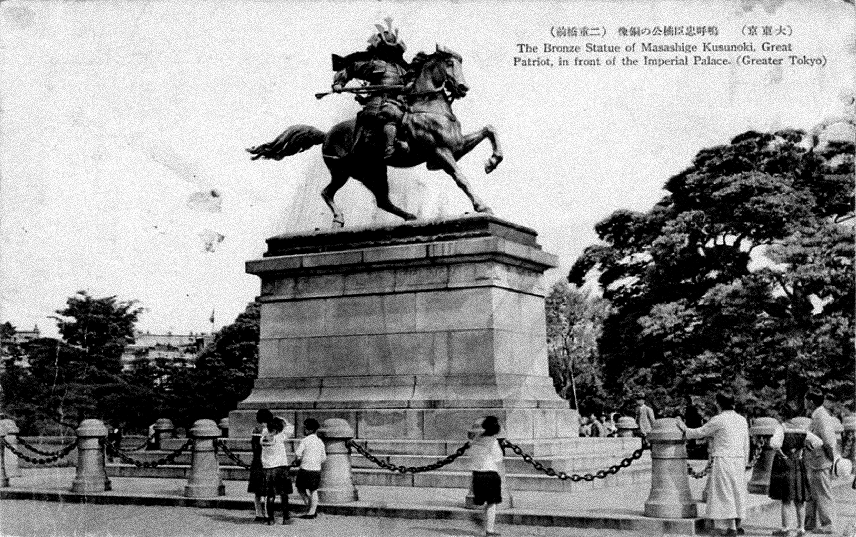

-
Copper, the first metal processed by Neolithic humans has accompanied the history of humankind for approximately 10,000 years, disguised in various forms of tools, ornaments, sculptures, currency, weapons, and conductors of electricity. In the idea of New Materialism, the atomic number 29 assigned material has been an animate object for a transversal human agency that has conveyed the propagation of colonial ideologies between two formal imperialists, the Netherlands and Japan.
Former imperialists on the opposite coast of the Pacific enriched their territories which led the rise of colonialism, exchanging commodities and progressive ideas through the trade of copper. The mined raw copper was smelted in different forms that embodied the physical and spiritual desire of the imperialists, exploiting their colonies. The colonial era declined, but the post-colonial specters made of copper has been bequeathed as historical heritages and imperial hegemonies, leaving wounds in the contemporary age.
Along with the transformation of copper on the colonial trajectory, Rusty Odyssey takes multidisciplinary roles of a historian and a graphic designer, provoking historian-disciplined statements interpreted in the artistic voice of a graphic designer to the ignorance of colonialism inherited over centuries and regions. It is a research essay of an interpretation of historical documentation that applied an analogy of visual evidence in artifacts in historiographic and theoretical perspectives. This article also examines conflicts in the contemporary era over copper to lay the foundation of my future work through the perspective a Korean graphic designer residing in the Netherlands. -
“In the Sumerian empire, there are a dozen varieties of copper inventoried with different names according to their places of origin and degrees of refining. These forms . . . a continuous melody of copper and the artisan will say: that’s what I need.
But regardless of the breaks operated by the artisan, there is no fixed order for alloys, a variety of alloys, continuous variability of alloys.”1. Gilles Deleuze (1979). Metal, Metallurgy, Music. Husserl, Simondon. Seminar Session at VincennesJane Bennet (2010), “A Life of Metal” in Vibrant Matter: A Political Ecology of Things
Copper has a life.
Here is copper.
An atomic number 29 metal is the first metal that accompanied the history of human civilization, transformed into tools, ornaments, sculptures, currency, weapons, and conductors of electricity. Nicknamed as “Dr. Copper,”2. The term Doctor Copper is market lingo for the base metal that is reputed to have a Ph.D. in economics because of its ability to predict turning points in the
global economy.
Investopedia 2018 copper has been a vital mineral for its diverse uses and for a significant barometer predicting the world economy; the global reserve of copper has thus represented the economic value. However, it led to a consequential contradiction as the alignment of the copper deposits with the economic trend has shown a significant fluctuation in modern society due to monopolized colonization by the past and present imperialists.Here I am.
I barely missed being a direct victim of the Japanese colonialism in my home country Korea in the flesh, but throughout my youth,
I observed numerous colonial legacies still lingering in our surroundings. Through the words of mouth, or textbook, or across the visual objects, I continued to witness the endless suffering of Koreans from the colonial history. One could argue, following the Black Intellectual, crucial writer and thinker Frantz Fanon, that
I am the child of a traumatized3. Frantz Fanon (2014). The Wretched of the Earth. Penguin Modern Classics. p.15 generation in Korea, and that the torment and anguish prolong here in the Netherlands whenever I am facing racialization, an ignorance of colonialism that this country created in many far away geographies.
I was finally encouraged to confront the colonial phantoms, by the realization I had almost by accident when I learned about the exclusive maritime trade between the two imperialists, Japan, and the Netherlands. Learning more about the historical context,
I could not help but see an evident correlation between the two in terms of the commodities they traded - especially the copper, residues they left in the conquered lands, and a rich mine of archival resources for the public to learn about their crucial bilateral trade relationship and the historical significance of copper.Copper is not just any metal but a “conductor”4. Füsun Türetken (2018). On The Most Powerful Catalyst on the Planet. Ph.D. project at Research Architecture, Goldsmiths Lon- don and the fellowship at Het Nieuwe Instituut (HNI) 2016/17. In her Ph.D. thesis, Türetken argues that metal is a conductor of all matters following the concept of Pantheism by Gilles Deleuze and Félix Guattari. that generated humiliating ideologies of humankind geared in“new materialism,”5. Deleuze and Guattari 1984; Bennett 2010; Dolphijn 2012 which was elaborated by a number of New Materialists.
With regard to new materialism, copper is a material not only for tools but for “transversal”6. Rick Dolphijn & Iris van der Tuin (2012). New Materialism: Interviews & Cartographies. Open Humanities Press. p.93 human agencies. Bennett (2010) examines the notion of the theory by stating that “copper is an alloy of ‘geological, biological and often human agencies’ through a series of self-transformation, which is not a sequential movement from one fixed point to another, but a tumbling of continuous variations with fuzzy borders.”7. Jane Beneett (2010). Vibrant Matter: A Political Ecology of Things. Duke University Press. p.59
To adopt Bennett’s idea once again, a life of metal is “an interstitial field of non-personal, human forces, flows, tendencies, and trajectories [...] in a knotted world of vibrant matter, to harm one section of the web may very well be to harm oneself.”8. Ibid., p.13Following this nature, copper represented the physical and spiritual desire of the imperialists to construct the imperial palace and smelt the war weapons.
Entangled with perceptions on race, gender, nationality, politics, exploitation, industry, and capital on a linear continuation of colonialism and post-colonialism, this paper demonstrated copper in historical and contemporary context focused on the life of the metal itself and its impact on human beings’ life.
This research attempts to inspect the colonial trajectory of copper to observe its both physical and spiritual transformation mainly in three countries: the Netherlands, Japan, and Korea.
Through five steps of copper processes, along with the material and visual studies in historiographic and theoretical perspectives, I also develop a contemporary argument of how copper acts as an agent creating the wounds in the modern era that inherits colonialism across time and territory.My life started in the beginning,9. “I have endowed him with a divine spirit of skill, ability, and knowledge...to make designs for work, in gold, silver, and copper...” (Ex. 31:3–5)with the atomic number of 29.
Since humans discovered me under the deep ground, my body has been devoted to human progress for ten centuries.
I was a stone, I could be a coin,
I was a sculpture again,
I became rust, crossing the ocean, running the soil.
Some people were happy with me, but others were crying.
I am hurt, I want to leave the wound what I made.
My story begins from a long time
ago and comes till today.
It is about two similar smelters.
I wish this story to lift my body’s weight off of the history.My life started in a small peninsula, Korea, with lasted for the span of 29 years.
Since I left my home country,
I have been devoted to myself for about a half-decade.
I was a Korean woman,
I could be a graphic designer,
I was a stranger again, I became
a victim of ideologies, crossing the ocean, running the soil.
I was happy to be here, but I was crying because of my trauma.
I am hurt, I want to leave the wound what people made.
My plot begins from a long time ago and comes till today.
It is about two similar colonizers.
I wish these words to stand against the colonial specters.Most copper is mined or extracted as copper sulfides from large open pit mines in porphyry copper deposits that contain 0.4 to 1.0% of copper.9. Pedro Oliveira (2012). The Element: Periodic Table Reference. PediaPress. p.475 Mainly in north-eastern Japan as the center, the total amount of Japanese copper production reached more than 5,300 tons10. Ryuto Shimada (2006). The intra-Asian trade in Japanese copper by the Dutch East India Company during the eighteenth century. Brill Leiden Boston. p.46 on average per annum from 243 working copper-mines in 1703 according to an official Japanese report.11. Ibid., p.47
Besshi Mine discovered in 1690 having rich copper deposits produced 700,000 tons of copper, and contributed to Japan’s trade and modernization.12. Besshi Copper Mine Memorial Museum. Sumitomo Group Public Affairs Committee Meanwhile, the Dutch Republic had no mining resources.As human life begins from getting out of the mother’s womb, a life of copper is born when it is extracted from the flesh of the Earth. The copper reserves for mining is the most fundamental provision of nature beyond human control, though, making the scarcity of mining resource that the source of wounds we have gained over countless disputes and wars.
A Dutch philosopher of New Materialism Rick Dolphijn attempted to conceptualize such wound as “the cracks of the contemporary” quoting a Japanese author Murakami Haruki’s writing: “one heart is not connected to another through harmony alone. They are, instead, linked deeply through their wounds.”13. Haruki Murakami (2015). Colorless Tsukuru Tazaki and His Years of Pilgrimage. Vintage Uk The fact that Dolphijn borrowed the quote of Murakami can also be interpreted in historical terms as their home countries, the Netherlands and Japan, shared similar remarks in copper mining colonization with “wounds of misfortune.”14. Rick Dolphijn (2017). The Cracks of the Contemporary VI: The Wound. Sonic Acts Festival – The Noise of Being
Their stances were opposite in the beginning as the Dutch Republic had no mining resources while Japan was one of the biggest copper producers in the seventeenth century geographically isolated by the mass of ocean.
A French poet Joë Bousquet can be applied to their relationship:
“become the man of your misfortunes; learn to embody their perfection and brilliance”15. Gilles Deleuze (2004). The Logic of Sense, Continuuㄴm. p.170 as they both became the imperialists of Europe and Asia, leaving wretched economic, social, and political woundson natives they colonized by sharing their wounds16. Rick Dolphijn (2017). The Cracks of the Contemporary VI: The Wound. Sonic Acts Festival – The Noise of Being and perfecting each other while doing so.Copper ore in Japan.
Copper was a cornerstone in the Japanese economy and industrialism. As the seventeenth century Japanese illustrator elaborately depicted in his painting, a small island lying off East Asia’s Pacific coast was already filled with the sound of digging copper ore from the mine.(◀︎ Figure 1.1, Figure 1.2 Figure 1.1, Figure 1.2
An illustration of the transportation of Japanese copper from a mine in Kodo Zuroku. c. 1801. Waseda University Library, Tokyo )The site was blessed with a large scale of mine resources such as silver, gold, and copper and could develop the independent copper mine industry with the aid of the exported technologies from foreign countries.17. A Chinese cupellation process called Haibuki (ash-smelting) was introduced in silver smelting by a Korean tradesman.The separation of silver from silver-containing copper by liquation (known in Europe as the Saigerproceß) was embedded by members of the first Portuguese trade missions in 1591. Arie Pappot (2014). Japanese Copper on the Dutch Market. University of Amsterdam / Rijksmuseum.
Japan’s grand reserve which brought a great wealth to the country. Compared to the US whose mine production of copper was valued at an estimated $ 8 billions in 2017, U.S.18. Mineral Commodity Summaries (2018). U.S. Department of the Interior. U.S. Geological Survey exemplified by Guggenheim family who later founded Solomon R. Guggenheim Museum in New York City with their financial accomplishment from the copper mines, Sumitomo family in Japan became one of the biggest Japanese conglomerates until this date with the fortune from “Besshi Copper Mine (Japanese: 別子銅山)”
(▶︎ Figure 1.3Figure 1.3 A copper ore extracted from Besshi Copper Mine. Besshi Copper Mine Memorial Museum Figure 1.4Figure 1.4 A postcard of Besshi Mine. c. The 1700s )Besshi Mine had a stellar reputation and fame for being the highest volume of copper production19. 700,000 tons of copper were produced from the Besshi mine. Sumitomo’s starting point, Sumitomo Group Public Affairs Committee during the golden age of the Japanese copper mining. For 45 years until they closed the doors,20. The Besshi Mine was closed in 1973. Ibid. it contributed to the glorious days of Japanese Imperialism to follow leaving the trace of blessing, pleasure, and pride of modern Japan still bragged about.
While Japan utilized this abudency in copper from Besshi Mine to achieve international commercial success, what was interesting is that the Dutch Republic acted as a mediator in the Japanese copper trading by spreading the Japanese copper widely to many foreign countries as previous research has indicated.21. Arie Pappot (2014). Japanese Copper on the Dutch Market. University of Amsterdam / RijksmuseumWhat the Dutch Republic
did not have but desired.
On the other side of the world across the Atlantic Ocean, the Netherlands, a colonial pioneer, was suffering from scarce natural resources, especially in mine materials. In words of a historian Jared Diamond’s theory22. Jared Diamond describes “Geographic Luck” as follows: In short, Europe’s colonization of Africa had nothing to do with differences between European and African peoples themselves, as white racists assume. Rather, it was due to accidents of geography and biogeography—in particular, to the continents’ different areas, axes, and suites of wild plant and animal species. That is, the different historical trajectories of Africa and Europe stem ultimately from differences in real estate. Jared Diamond (1999). Guns, Germs and Steel: The Fates of Human Societies, Ww Norton & Co who made a remark that such flat country must be a victim of the geographic luck with only regard to the mine resource reservoir. The lack of natural resources such as copper thus encouraged the spirit of conquistadors, with a strong desire of conquest led to the colonization of Asian and American countries, taking advantages of its geographic location of the coast-line at the mouth of the Rhein river.
(◀︎ Figure 1.5 Figure 1.5 A map of the Dutch Republic. c. 1682. www.geheugenvanneder
land.nl )
The aspiration of Dutch Imperialists reached its apogee during the seventeenth century, labeled as “Dutch Golden Age,” entrenching the spirit of colonialism rapidly. A historian John Lothrop Motley left a chronicle of this period as follows:"the rise of the Dutch Republic must ever be regarded as one of the leading events of modern times. [...] becoming itself a mighty State, and binding about its own slender form a zone of the richest possessions of earth, from pole to tropic, finally dictates its decrees to the Empire of Charles."23. John Lothrop Motley (2018). The The Rise of the Dutch Republic - Complete (1566-74). CreateSpace Independent Publishing Platform
Dutch artists expressed the triumph of the Dutch Golden Age with numerous artifacts in copper, like the statues of the greenly oxidized bronze at “The Royal Palace (Dutch: Koninklijk Paleis van Amsterdam Paleis op de Dam),” (◀︎ Figure 1.6 Figure 1.6 Gerrit Berckheyde. The Town Hall of Amsterdam. c. 1665-1680. Amsterdam Museum ) standing on top of the largest and most prestigious town hall constructed during that period.
Bronze Atlas on natives.
The Royal Palace in Amsterdam,
June 2018
Ten years ago, passing through a flock of tourists, this historical architecture from the Dutch Golden Age tugged at my gaze. It is nothing but a visual heritage of the hulking sculptures and delicate ornaments built on the symmetric construction in the classic European Renaissance style constructed under the benevolent imperialist monarchy.
(◀︎ Figure 1.7 Figure 1.7 A bronze statue of Atlas by Artus Quellinus I. Royal Palace of Amsterdam. 23 August 2011. Photo: Yair Haklai )
Today,
I am staring at the palace again.In the center of the west façade, the world’s most massive bronze Atlas figure is carrying the firmament on his shoulders, desiring to occupy the entire universe accompanied by Fortitude and Temperance.24. Saskia Beranek (2017). The Town Hall of Amsterdam. Khan Academy The pediment contains allegories of the four continents and the benefits of global trade; the city saver under the guard of Atlas in the tympanum is stretching her arms out to receive the treasure of the world. The figures of African and European grabbing the bronze grape leaves were carved in the west and the natives of Asian and American holding the bronze pipe sculptured in the east.25 Ibid. (◀︎ Figure 1.8 Figure 1.8 A pediment in the center of the west facade. Royal Palace of Amsterdam, Hubertus Quellinus. c. 1665. Amsterdam Municipal Archives )
Facing the bronze Atlas, the sculptured natives’ faces holding copper artifacts under him, on a whim, I am convoluted with thoughts with a bit of sadness.
I am now able to identify the cause of such emotions: the colonial trauma engraved within me that has disturbed me for the years I have lived, banning me from merely walking by all these little traces of such history in this country. A vestige of my old wound is found, but it is just a piece of speculation that is not concrete enough to be clear about my stance.
But I have to finish the story.It is necessary here to clarify how exactly the Dutch Republic had an Atlas with copper skin. In the center of command of the Dutch Renaissance, Dutch East India Company (Dutch: Vereenigde Oostindische Compagnie; hereafter abbreviated as VOC) was found. The VOC ships fraught with the commodities of Asian origin were exploring the vast ocean and copper was one of the primary goods to trade, whose majority was extracted from Besshi Mine in the far-east country, Japan.
Considering the abundant historical documents proving the copper imports from Japan in the seventeenth century,26. Please refer to Appendix A [The Dutch Company’s Export from Japan and Import into Europe of Japanese Copper, 1646-1734] the Atlas seen at the Royal Palace in Amsterdam could have gotten its flesh from Besshi Mine.Copper smelting is a process of applying heat to ore which is the mixture of copper, iron, and sulfur.
It uses heat and a chemical reducing agent to decompose the ore, driving off other elements while leaving the metal base behind.27. Official Site of Copper Development Association, Inc.
Japanese copper was smelted into long bars (Saodo) known as “Japans Staafkoper” in the Netherlands28. For the domestic markets copper was smelted into a ball-type (Marudo), a plate-type (Teido) and a wire-type (Magasaodo) and there were other moulds as well. Ryuto Shimada (2006). The intra-Asian trade in Japanese copper by the Dutch East India Company during the eighteenth century. Brill Leiden Boston, p.51 until it was transformed insto coins issued by VOC.Smelting gives infinite potentials to a life of copper, expanding the range of figures it can take. The metal body freed from the stone-
hell turns into the colonial mint, whose bare extract gets circulated
through the land occupied by the Dutch Empire.The smelted copper clones became colonial artifacts but also metamorphosed into an agent of conveying the propagation of colonial ideologies between the Netherlands and Japan.
(◀︎ Figure 2.1, 2.2 Figure 2.1, 2.2
A copper smelting scenery in the Edo period, Illustrated by Niwa Tokei. c. 1697. National Diet Library Japan. )VOC duits still on sale.
There is a Dutch proverb “Een duit in het zakje doen” (English: “putting a duit in the bag”) meaning “you should contribute to something.” “Duit” is a Dutch copper coin issued by VOC, used in Indonesia which was “Dutch East Indies” under the Dutch colonial rule. Duits were compelled to be circulated in the Southeast Asian countries to encourage the trade of VOC, whose trace can be found on a lot of duits still on sale in different countries; many of duits can be effortlessly found on eBay at the average price of fifteen dollars; with 1790 Dutch Indonesia $9.90, 1786 Sri Lanka, $9.90, and 1770 Utrecht $20.00. (▶︎ Figure 2.4Figure 2.4
The VOC duits on eBay. 2018 )
Meanwhile, in Galle, one of the conquered towns in Sri Lanka, tourists are often forced to buy duits as souvenirs.
(▶︎ Figure 2.5Figure 2.5
VOC duits used in Sri Lanka. c. 1798. Central Bank of Sri Lanka ) A Dutch historian Meijer Raneft described as “the quietest people of Eurwope brought together with the quietest people of Asia,”29. Gloria Wekker (2016). White Innocence: Paradoxes of Colonialism and Race. Duke University Press, p.2 Sri Lanka was called Ceylon under the Dutch Empire rule during 1656-1796 as one of the essential trade ports in Asia. The bible depicts Sri Lanka30. Gold, Silver, Ivory, Apes & Peacocks which were brought from “Tharshish” (1Kin 10:22)” with a long tradition of the unique trade upon the fruitful land until it faced a rapid decline after duits brought Sri Lanka to the edge of collapse.As Christopher Lee (2017) examines, it is significant to inspect duits as a graphic artifact. In the perspective of a graphic designer living in the contemporary time, he defines currency as “historiographic instruments” and “vehicles of power” criticizing the political dimension of typography in the graphic artifacts.31. Christopher Lee (2017). Immutable: A Mineral History of Currency and Typography. The fellowship at Het Nieuwe Instituut (HNI) 2017/18
Graphically, duit is with the distinctive monogram of the interlocked letterers of “VOC” clearly embossed upon; it was the first globally recognized designed logo which reflected the Dutch Empire’s aspiring global power.Moreover, historically, the name of a company instead of a country on the currency indicates its prestige and corporate value as a world’s first multinational chartered company conducting international trade.
With regard to historiographic instruments in the modern era, duits are perpetual monetary in graphic design-polished as remainders of colonization, as a post-colonial commodity revealing the unconscious stains of colonial hegemony.The phenomenon of thousands of duits still on sale is thus not only the archeological evidence that shows the sorrow of conquered days of natives but the by-product of stultifying ignorance about the reproduction of colonial ideology.
VOC expanded its trading activities to Asia through the “Intra-Asian trade”32. “Guserat textiles must be traded for pepper and gold on the shores of Sumatra; pepper from Banten for reals and textiles from the coast; Chinese goods and gold for sandalwood, pepper, and reals; silver and copper can be for from Japan for Chinese goods; the textiles from the Coromandel cost for spices, other merchandise and pieces of eight; pieces of eight from Arabia for spices and other small goods, making sure that one compensates the other.”, Quote from a letter from Jan Peietersz Coen to the directors. pp.485-486 which was the crucial strategy of the Governor-General of VOC, Jan Pietersz Coen.33. Jan Peietersz Coen described the “Intra-Asian Trade” as “all is done in ships without money from the Netherlands. Your worship have the principal spices already so what is stopping it then? Only a few ships and a little water to work the pumps. Are there more ships in the world than in the Netherlands? Is there a lack of water there to prime the pumps?”. Ibid. This tactic was praised by a renown Scottish economist Adam Smith34. “Between Europe and the East Indies, at which almost every European ship makes some stay, both in going and returning. The supplying of those ships with every sort of fresh provisions, with fruit and sometimes with wine, affords alone a very extensive market for the surplus produce of the colonists.” Adam Smith (2012). The Wealth of Nations, Wordsworth Editions Ltd. p.333 later, but it was apparently an unfair trade creating a vast profit to VOC exploiting the nature resource in the natives’ territory.
The copper stick (◀︎ Figure 2.6 Figure 2.6 Copper sticks (Stuiver Bonk Bar) issued by VOC in Ceylon,
c. 1785, Pegasus Auctions) ) which was smelted in Japan was one of the most sought-after items in the trade between Europe and East Asian market; they were transformed into duits in the conquered land. Japan was undeniably leading the business, meticulously operating the system in every size ranging from small of ces to massive commercial bulwarks. The rise of Intra-Asian commerce brought a great deal of bene ts to both the Dutch Republic and Japan.The slave boat
on the middle passage.Slavery is a strip-tease of our humanism. A philosopher Jean-Paul Sartre strongly spoke of the European inhumanity of the violence in the colonized territory, saying “violence in the colonies does not only have for its aim the keeping of these enslaved men at arm’s length; it seeks to dehumanize them.”35. Frantz Fanon (2014). The Wretched of the Earth. Penguin Modern Classics. p.13
Slavery is an over-exploitation of humanism by the agency of violence. This violent menace to the natives was geared up during the voyage of the VOC sailing ships as optimal conditions to govern the world. 36. Laurens Real, the Governor-General in the East Indies from 1615-1619, introduced slave labour into the nutmeg plantations on Amboina in the East Indies. Arie Pappot (2014). Japanese Copper on the Dutch Market. University of Amsterdam / Rijksmuseum The slave bracelet made of Japanese smelted copper (◀︎ Figure 2.7 Figure 2.7 A slave bracelet made of copper, Collectie Stichting Nationaal Museum van Wereldculturen ) was even manufactured by the slaves themselves on the assembly line which took over the control of their bodies and corrupted ethos under the colonialists’ aggression.
The slaves were reduced to an appendage of the production for the colonial trade. It is reminiscent of “real subsumption” of labor, 37. Jon Elster, Elster Jon (1986 ). An Introduction to Karl Marx. Cambridge University Press. p.55 according to the de nition of “the second stage in capital’s domination of labor” 38. Ibid. that Karl Marx claims; it was the precedent demonstration of which he was further concerned with the transformation of human labor into its own enslavement.As much as Adam Smith emphasized the division of labor to increase the ef ciency in manufacturing, 39. Adam Smith (2012). The Wealth of Nations, Wordsworth Editions Ltd. p.410 working bodies were indeed needed to circulate the trade to exploit the labor; yellow, brown and black bodies got on board as commodities of the degradation down to animals. The slave sailing ship, such as Meermin (◀︎ Figure 2.8 Figure 2.8 An illustration of the VOC slave ship Meermin, c. 1789, Collection of Four and Eighty Dutch Ships ) was traveled through the Asian, African, American continents, carrying the slave bodies under the command of the Jan Pietersz Coen. 40. He was a successor of Laurens Real (See the Footnote 33). Arie Pappot (2014). Japanese Copper on the Dutch Market. University of Amsterdam / Rijksmuseum
Without a doubt, the slave trade ship explicates the semantic visual-metaphor of “absolute power” (◀︎ Figure 2.9 Figure 2.9 Hank Willis Thomas, “Absolut Power”, inkjet print on canvas and paper, 2003, Sites@Duke ) as shown by the contemporary African-American artists Hank Willis Thomas’s well-known depiction of the slave ship on the “middle passage”: millions of native bodies were stacked on top of each other, yellow bodies from Ceylon on the black gures from Madagascar already lying on the naked American natives from the Cape. This view is supported by Paul Gilroy’s words:
“focus attention on the middle passage, on the various projects for the redemptive return to an African homeland, on the circulation of ideas and activists as well as the movement of key cultural and political artifacts.” 41. Paul Gilroy (1993). The Black Atlantic: Modernity and Double-Consciousness. Harvard University Press. pp. 16-17
The body lost its ontological value and dignity as a human; they were degraded to the sacri ced inferior races by the imperial predator. How long has the new generation of having yellow, brown and black voices kept coming on the scene to reveal the European inhumanity?
They, nevertheless, firmly laid the foundation of European ignorance, represented “the great VOC mentality” that many Dutch are still proud of, as The Dutch prime minister, Jan Pieter Balkenede emphasized during the parliamentary debate in 2006. 42. “(...) I don’t understand why you’re all being so negative and unpleasant. Let’s just be happy with each other. Let’s just say “the Netherlands can do it” again: that VOC mentality. Look across our borders. Dynamism! Don’t you think?” Jonsson, Stefan; Willén, Julia (2016). Austere Histories in European Societies: Social Exclusion and the Contest of Colonial Memories. London: Routledge, p. 67/ RijksmuseumA cradle of Imperialism and Orientalism.
Koninklijke Bibliotheek,
Den Haag, the Netherlands,
August 2018
I have been investigating a small fan-shaped artificial island called Dejima (Japanese: 出島) for a while because almost all copper trade between the Netherlands and Japan occurred around this island. So-called “The Copper Renaissance” arose here, smelting copper into sticks to create pioneering artifacts such as duits.
(◀︎ Figure 2.10 Figure 2.10 An Illustration of the copper package production in Dejima Island, Kawahara Keiga, c. The 1800s, History and Culture Museum Nagasaki Museum of History and Culture, 2.11 Figure 2.11 A package of copper sticks for export in Dejima Island, 2006, Photo: Wakaba Hidenori , Country Designated Historic Site of Nagasaki City ) Dejima Island is a colonial cradle of the intimate bondage between two former imperialists; the creation of the artificial island was intended to construct the trading post of VOC, and Hollanders become part of the island.
The academia of the current generations of intellectuals in the Netherlands and Japan left a large amount of historical documentation about the exclusive maritime trade between two countries. 43. Blussé (2001); Moskowitz (1974); Mulder (1985); Pappot (2014); Shimada (2006); Wahid (2015); Yasuko (2000); (▶︎ Figure 2.12 Figure 2.12 An illustration of the VOC port in Dejima Island, c. 1804, Collection from the Historiographical Institute of the University of Tokyo City, 2.13 Figure 2.13 A map of the VOC factory in Dejima Island, c. 1824-1825, Koninklijke Bibliotheek, 2.14 Figure 2.13 A map of the VOC factory in Dejima Island, c. 1824-1825, Koninklijke Bibliotheek ) There is no difficulty in research due to a wealth of materials; meanwhile, I cannot help but become sarcastic about the fact that they both barely hesitate to become a eulogist admiring each other’s imperial achievement without the introspective attitude towards the wounds they left in others.
Following Gilroy (1993)’s idea of sailing shipas “chronotope,” 44. Paul Gilroy (1993). The Black Atlantic: Modernity and Double-Consciousness. Harvard University Press. p.6 the VOC ship was not a marine vessel carrying just copper sticks or coins but conductors which interchanged knowledge, culture, politics, technology and ideologies such as Imperialism and Orientalism between two countries via this island.
A pictorial depiction of the party in the house of the Dutch chief of Dejima Island conceivably hypothesized the theory; not only the smelted copper but an “exotic oriental phantasma” of the Japanese female body in the oriental landscape was consumed as the commodity. (▶︎ Figure 2.14 Figure 2.14 depiction of a party in the house of the Dutch chief of Dejima Island. c.1805~1815. Nederlands Scheepvaartmuseum ) This finding, while preliminary, suggests that the proliferation of “Orientalism” was accelerated in Japan as Said (1978) later de ned Orientalism 45. The idea of Orientalism, widely known by Edward Said’s de nition of “The East,” states the societies and peoples who inhabit the places of Asia, North Africa, and the Middle East. Edward Said (1978). Orientalism. Pantheon Books as a constructed misinterpretation of the Orient — the Asian continent, by the Occident —, the Europeans. More precisely speaking, “Japanese Orientalism” which developed into “Japonism” 46. First described by French art critic and collector Philippe Burty in 1872, Japonism, from the French Japonisme, is the study of Japanese art and artistic talent. Ono Ayako (2003). Japonisme in Britain: Whistler, Menpes, Henry, Hornel and nineteenth-century Japan. New York: Routledge Curzon. p.1 in European fantasy was later manifested in the island by Dutch white men.
The deception of an oriental body has been solidified more than three centuries, and it was firmly stereotyped under the European masculinity into the ideal Asian female protagonists who are obedient and beautiful as shown in the opera “Madama Butterfly.”: “her name was Chô-san, Miss Butterfly. She was so sweet and delicate [...] but the little girl-wife awaited that signal in vain. He never returned.” 47. “On the hill opposite ours lived a little tea-house girl; her name was Chô-san, Miss Butterfly. She was so sweet and delicate that everybody was in love with her. In time we learned that she had a lover. That was not so strange, for all tea-house girls have lovers, if they can get and hold them. Chô-san’s young man was quite nice, but very temperamental, of a moody, lonely disposition. One evening there was quite a sensation when it was learned that poor little Chô-san and her baby, had been deserted. The man promised to return at a certain time; had even arranged a signal so that Chô-san would know when his ship had come in; but the little girl-wife awaited that signal in vain. ... He never returned.” John Luther Long (1898). Madame Butterfly. Century Magazine sAccording to the “objectification theory,” 48. Barbara L. Fredrickson, Tomi-Ann Roberts (1997). Objecti cation Theory: Toward Understanding Women’s Lived Experiences and Mental Health Risks. Department of Psychology, University of Michigan the Asian female body was sexually objectified in a sociocultural context and treated as bodies that exist for the use and pleasure of men. 49. John Stoltenberg (2000). Refusing to be a Man: Essays on Sex and Justice. UCL Press. p.203 The widespread portrayal of Asian women as a sexual object became the racial/cultural stereotype and stimulated the sexual exploitation at the present day.
To produce purer copper suitable for making copper plates or hollow-ware, melting processes have to be undertaken, using charcoal as fuel. The repeated application of fire-refining and the use of electricity in processing enabled copper production of 99.25% purity.50. Official Site of Copper Development Association, Inc.
The exported imperialism from the Netherlands along with the copper was refined in Japanese imperialism, exploiting copper with the labor forces in its colony, Korea.“The rising sun flag” was fluttering in the air full of confidence of the new imperialist in the Asian continent. (▶︎ Figure 3.1Figure 3.1 An illustration of the first steam train leavingYokohama. c. 1872, Baidio Kunimasa. Library of Congress )The rapid industrialization and modernization began in Japan with higher production rate in copper with more mines and fewer workers.
They processed copper in large quantities as it was needed for the mass production and construction of infrastructures such as shipyards, iron smelters, and spinning mills.The colonial parallels
in Korea and JapanThe film director Shin Na-ri seeks to observe two copper mines in Korea and Japan through the lenses of a juxtaposition of the colonial legacies. In her documentary “The Rust,” she captured linguistic and historical parallels between them; firstly, two copper mines are located in regions with the same name “Ilkwang -일광 (Niko-日光),” which means “One Light” in English.
Furthermore, Korean workers were forced to mine copper during the Japanese colonial era. They were compulsively moved to Niko to work in Japanese mine – Ashio Mine or were mobilized in Korean mine, Ilkwang Mine. Now no one pays attention to the Ilkwang mine (◀︎ Figure 3.2, 3.3Figure 3.2, 3.3 Ilkwang mine in Korea, Documentary “The Rust.” Shin Nari. 2018. DMZ Docs ) after its closure; only the rusty water is flowing through the mine site. On the other hand, Ashio Mine (◀︎ Figure 3.4Figure 3.4 Ashio Copper Mine in Nikko. Japan. 2015. Photo: Saigen Jiro, Wikimedia Commons , Figure 3.5Figure 3.5 Ashio Copper Mine in Nikko, Japan. 2015. Lost Collective. Photo: Brett Patman ) became a tourist spot as a symbol of the Japanese industrialism, which they promoted without any mention about the Korean mobilization.
Lastly, both mines were operated by Sumitomo Metal Mining Corporation (Japanese: 住友鑛業株式會社)” which was the owner of Besshi Mine as stated in the first chapter of Mining.According to the “Report on Korean Minerals (Japanese: 朝鮮鑛物誌,)” there were 27 copper mines in Korea.Pocheon, Ongjin in Gyeonggi Province, Goesan in North Chungcheong Province, Dangjin in South Chungcheong Province, Gimje in North Jeolla Province, Gwangyang in South Jeolla Province, Uiseong, Dalseong, Yeongcheon in North Gyeongsang Province, Goseong, Changwon, Haman, Miryang, Dongae, in South Gyeongsang Province, Suan, Songhwa, Chaeryong, in Hwanghae Province, Huchang, Huichon, in North Pyongan Province, Kapsan, Samsu, Jangjin in South Hamgyong Province, Hamju, Tanchon and Dukwon in North Hamgyong Province. Joseon Governor General Government Office Geological Survey Office edition (1941) Report of Korean Minerals, Sanseido (◀︎ Figure 3.6Figure 3.6 An inner train in Ashio Copper Mine, c. The 1910s. Leonard A. Lauder. Collection of Japanese Postcards ) Japan concentrated on the manufacturing industry of the war material, which was directly related to the production of war weapons to support World War II. Millions of factory turbines spun to melt tons of copper molded into the tanks, bullets, combat planes and machine guns ready for sales.
It is almost certain that the systematic operation of the labor mobilization was unmanageable without “Tõyõ takushoku kabushiki kaisha (Japanese: 東洋拓殖株 式会 社, Korean: 동양척식주식회사)” which can be translated into “Oriental Development Company (hereafter abbreviated to ODC)” in English. (▶︎ Figure 3.8Figure 3.8 An illustration of The Dutch East India House in Amsterdam. 1650–1724. Amsterdam. Rijksmuseum ) Another interesting colonial parallel can be argued with ODC; it was established under the colonial rule for 53 years,52. It was to engage in the following activities in Korea: 1. Agriculture. 2. Sale, purchase, renting, and leasing of lands requiring exploitation (development). 3. Undertakings connected with lands, and the control necessary for their exploitation. 4. Construction, sale, purchase, and renting of buildings necessary for the purpose of exploitation. 5. The assembling and distribution of Japanese and Korean settlers necessary for exploitation. 6. Supplying to settlers and farmers in Korea articles necessary for exploitation, and the distribution of articles produced or acquired by them. 7. Furnishing funds necessary for exploitation. Residency General of Korea (1908-1909). Annual Report on Reforms and Progress in Korea. Seoul. pp.17-18 modeling on VOC.53. Both were the chartered company, operated the international trade on purpose of colonialism and delivered on the exploitation policy. (▶︎ Figure 3.9Figure 3.9 An illustration of the Oriental Development Company Building, Tokyo. 1945. South Seas Development Companyum ) Its presence was regarded not only as the architectural symbol showing off their pride for being a newly rising follower of the European Imperialist as another inherited colonial legacy from the Netherlands. The Japanese government could mobilize the Korean and exploit the mining resource including copper with the help of ODC; the substantive coercion becomes over-bearing by promulgating a “National Mobilization Law (国家 総動員法)” and “Ordinance on Korean Main Mineral Production (朝鮮重要鑛物增産令).”54. Please refer to Appendix B [Ordinance on Korean Imperative Mineral Production]

Korean diaspora with rust.
“Forced mobilization under the Japanese rule” has been the principal subject in the the field of Korean (post)colonial literature.55. Choi Jeong-Hee (1945); Lee Geun-Young (1941); Jo Yong-man (1941); Yeom Sang-Sup (1993);One of the crucial authors Ha Geun-chan precisely described this anthropological tragedy as follows:
“it was in the station yard where more than a hundred men gathered and squirted down. Although they were all waiting for the train, none of them knew where the train was headed. They were forced conscripts. Some said they were going to the coal mines in Hokkaido and some said it was to the South Sea Islands. There were even ones who wanted to go to Manchuria.”56. Ha Geun-chan (Author), Kevin O’Rourk (Translator) (2013). The Suffering of Two Generations. ASIA Publishers
Millions of Korean body on the Japanese requisitioned ship or train were forced to leave “deportation journey,” as natives in the VOC slave ship. (◀︎ Figure 3.10 Figure 3.10 Gathered mobilized Korean at the Japanese government‘s command c.The 1940s, Koryeosa , Figure 3.11Figure 3.11 An illustration of the Japanese requisitioned ship from Busan to Shimonoseki, c. 1944, 民族問題硏究所 ) 7,827,355 Koreans,57. Statistics Annual Report (1942). Governor-General of Korea advance, were sent to the mainland of Japan, Manchuria, Sakhalin, South East Asia or somewhere in Korea, anywhere that was ruled by Imperial Japan; Irene Taeuber estimates that the number accounts for as much as 11.6 percent of the Korean population by 1945.58. Irene Barnes Taeuber (1946). The Population Potential of Postwar Korea. Association for Asian Studies The misfortune of Korean natives lays a foundation for the “Korean Diasporas.”59. Kim Myung-Ja (2017). The Korean Diaspora in Postwar Japan: Geopolitics, Identity and Nation-Building. I.B.Taurix & Co. Ltd. p.78
As Safran (1991) defines, diaspora is “metaphoric designations for several categories of people expatriates, expellees, political refugees, alien residents, immigrants, and ethnic and racial minorities—.”60. Wiliam Safran (1991). Diasporas in Modern Societies: Myths of Homeland and Return. A Journal of Transnational StudiesKorean diasporas in Japan are called, “Zainichi Koreans”, in ethnographical words, who are marginal Korean people in Japan that were identified neither as Japanese nor as foreigners, as no-one, suffering from the post-colonial wound.
Korean diaspora is a blurry word formed with letters of tears Korean conscripts dropped; millions of Zainichi Koreans cannot still finish “The Return of the Have-Lived.”Ha Geun-chan’s literary contribution furthermore helps tropify the physical adversity of the Korean workers as follows:
“They were laying on the airfield. Tearing lumps left by mosquito bites and sweating like rain, they leveled hills and sifted soil from the sunrise to the sunset. It was indescribable slavery, even for men whose bones were hardened by farming at home. Even the water tasted bad, and the food soured. The disease was prevalent as well. Every day a man would collapse at work.”
In both mines and factories, most of Koreans were forced to work in humiliating working environment, without any wage or compensation. The confidential American military report exposed the throes of their blazing pain. (▶︎ Figure 3.13Figure 3.13 Chi-Nu tank on the production line in the Mitsubishi factory. c.1945. Wikimedia Commons ) Majority of them worked for “The Sumitomo” and “Mitsubishi” which are notorious as war criminal company using Koreans like slaves to produce the potent weapon of mass destruction. (◀︎ Figure 3.14Figure 3.14 Korean forced labor in the American military confidential documentation. c. 1945. Source: National Institute of Korean History )
Two different paths of
bronze statues.- 
In Kokyo Gaien National Garden (Japanese: 皇居外苑) in Tokyo, the bronze statue of the fabled Samurai “Kusunoki Masashige (Japanese: 楠木正成)” (◀︎ Figure 3.15Figure 3.15 The Bronze Statue of Masashige Kuunoki. Great Patriot in front of the Imperial Palace, Tokyo. c. 1930. Old Tokyo ) was configured by Sumitomo Company celebrating two hundreds years of Besshi Mine opening. The legendary skin of Samurai was created in 1990 after 30 years of production; no one has been able to prorvide a concrete answer to the source of it, but there have been evident traces that Besshi Mine has exploited Korean labor forrces. It was disclosed to the world via “A List of the Korean Forrced Labor Site (Japanese: 朝鮮人強制労働現 場一覧)”64. Please refer to Appendix C [A List of the Korean Forced Labor Site] drafted by a Japanese history researcher Yasuhito Takeuchi (Japanese: 竹内康人)”
“Forced conscripts” is indeed one of the hottest diplomatic issues between Japan and Korea following the political dynamics of two countries. However, Japanese government persists on denying it, saying “there isn’t an official list of the mobilized workers” while Mitsubishi Company made an official apology to James Murphy in 2015, an American who was one of the 900 forced labor workers working in the copper mine.Besshi Mine is currently attracting tourists with a phrase saying “The oriental Machu Picchu” to promote it as a heritage site that shows the cornerstone of Japan’s modernization and trade, but there is no mention of the inhumane use of Korean slavery.
(◀︎ Figure 3.15Figure 3.15 Besshi Mine. 2013. Photo: Nobuo Kawaguch. Jouney of Japan )
As copper was a clue to the inherited colonialism originated from the Netherlands in the seventeenth century, transcending time and territory continued to Korea, my home country, in the twenty-first century through Japan, it acted as an active agent that left unforgettable scars on Koreans.Berlin, Germany, August 2018
It all started almost by an accident in a small gallery in Berlin. I met Korean sculptors who made a bronze statue symbolizing the Korean forced laborers. Their voice was true to the story, but various facts were hidden under the shade of the censorship in newspaper and internet. They are witnesses of the wretched life of survivors in postcolonial environment, victims who provoked through the political interference between Korean and Japanese government.
On May 1, Korean Labor Day, the activists who attempted to erect a statue in front of the Japanese Consulate in Busan despite disapproval by the local government due to a road and traffic law were faced by 500 police. (◀︎ Figure 3.16 Figure 3.16 A clash between activists and police around a bronze statue of Korean forced laborers. 1 May 2018, Busan Newspaper. Photo: Jeong Jong-hee ) It was later revealed that it was in fact Japanese government demanded the Korean government in advance to prevent activists.
Witnessing the profound irrationalities of society and the political dynamics and sympathizing the wounds the sculptors endured, a ripple of sorrow run through thousands of agonizing words on this essay.
Now, at this moment, I cannot help but consider my social responsibility as a Korean artist in this current generation. I have to find a way to heal the wounds, choosing to pave the road with the tools that have been given to me.The refined copper is poured into a mold, which contains a hollow cavity to solidify copper in a desired shape.65. Official Site of Copper Development Association, Inc. Now copper stands on the stage of infinite potentials to be an artifact in any form, fully embracing the creativity of the artist.

HOW DO I, AN ARTIST,
ERASE THE WOUND?Examining the transformation of copper through four different processes over four centuries and miles across the Atlantic, I have observed inherited colonialism through the colonial trajectory of copper which enabled me to construct a map on the left
Although Dolphijn (2017) states that “it is a shared force of both philoso- phy and art which is finding ways to leave the wound that matter to them,”, 67 I wondered what the meaning of this map would be and how it would matter to me. However, Dolphijn gives me a hint once more with his quote that reads “this does not mean that artist and philosopher should search for ways to identify these wounds, bothered and hurt by these wounds. This means that you carried an experiment with a kind of creativity to map these wounds.” 68Copper slag is a by-product of copper extraction from smelting. During smelting, impurities become slag which floats on the molten metal.69
There are still lots of slag of colonialism in the Netherlands and Japan which shows the lack of education on historic events of two countries.THE WOUND WILL ALWAYS BE THERE
The bronze bodied boat is floating on the Amsterdam-Centrum as if the VOC ship was staying on the surface of the North Sea of the Dutch Empire. (Figure 6.1)
This architecture together with a replica the VOC ship, cannot help but represent the copper slag of the colonial processing of copper rather than solely housing NEMO Science Center.
On the year of 2016 in Hoorn, there was a magnificent local event celebrating the 400 years of the discovery of Cape Horn.70 The VOC ship “Halve Maen” was sailing through the artillery belched fire with a deafening roar, reminiscing past glories that was built upon hundreds of bodies who acted as slaves for the Dutch.They are all post-colonial wounds in the crack of the Netherlands, revealing the pain of colonial descendants. Gloria Wekker tried to find a reason of such wounds in educational materials as stated as follows; “until the last decade of the twentieth century, a stark juxtaposi- tion between the Dutch imperial presence in the world, since the six- teenth century, and it is almost total absence in the Dutch educational curriculum, in self-image and self-representations.”71
Similar stance can be found in Japan. “The Japanese Society for History Textbook Reform (Japanese: 新しい歴史教科書をつくる会)” intentionally downsized the Imperial Japanese war crimes by not men- tioning historical issues such as the Korean labor mobilization and the comfort women they abused during World War II,72 and other various dehumanizing incidents that happened during the Japanese colonial- ism.